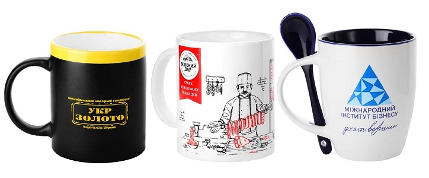
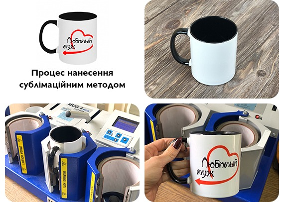
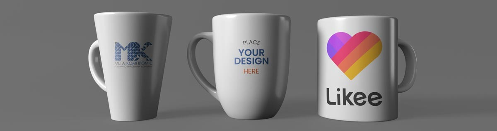
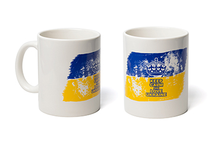

Ще 10-15 років тому персоналізоване або стилізоване кухонне начиння можна було побачити лише у великих фешенебельних готелях та об'єктах господарської діяльності величезних корпорацій. У тих організаціях, які могли собі дозволити робити великі оптові замовлення від 100 тисяч штук. Сьогодні чашка з ім'ям стала звичним сувеніром, який можна зустріти на полиці будь-якого тематичного магазину. Але ім'я або знак зодіаку не все, що можна зустріти на посуді. Адже сьогоднішні технології друку на посуді та кухонного начиння дозволяють переносити практично будь-які зображення – від різних жартівливих цитат до власних фотографій.
Основні способи нанесення зображень або тексту на чашки, а також їхні плюси і мінуси:
Технологія друку на чашках
- Деколь;
- Трансфер;
- Сублімація;
- Шовкотрафарет.
Деколь
Найстарішим методом закріплення картинок на кераміці є decalcomanie (з французького «переведення»). Його вигадали ще в епоху появи індустріальних способів виробництва посуду. Принцип такого перенесення досить простий - спеціальними фарбами вихідний макет передруковується на підкладці, а зверху розкривається лаком. Потім зображення "переводиться" на потрібну площину. А лак виступає ланкою, що зв'язує і утримує чорнило.
На цьому етапі процес холодного «принта» закінчено і формування готове до використання. Однак картинка на ній, що не пройшла додаткової обробки, не може похвалитися стійкістю та надійною фіксацією.
І хоча подібний метод перенесення швидше і дешевше за всіх інших, він використовується в основному для створення декору, який ніколи не побачить мийки.
Якщо ж потрібно отримати більш стійку пофарбовану поверхню, до минулих деколь матеріалів застосовують процедуру випалу. У печі для кераміки під тиском високих температур кераміка "сушиться". В результаті барвники грунтовно проникають у матеріал і надійно фіксуються на ньому. Таку продукцію можна сміливо мити і застосовувати в побуті – його поверхня буде однорідною, стійкою до механічного стирання та вицвітання.
Проте мінусом decalcomanie «на гарячу» є тривалість процесу, потреба в його якісному контролі та технологічні труднощі реалізації. З огляду на це продукт, що вийшов з камери випалу, виходить дорожчим. До того ж, виготовлення дрібних партій (до 100 штук) економічно недоцільне.
Як холодна, так і термічна «переведення» програють усім іншим у кольоровості та багатстві відтінків. Адже для їх реалізації застосовують спеціальні фарби, а повне заливання доступної площі неминуче призведе до того, що малюнок «попливе».
На цьому етапі процес холодного «принта» закінчено і формування готове до використання. Однак картинка на ній, що не пройшла додаткової обробки, не може похвалитися стійкістю та надійною фіксацією.
- Плюси:
- Можливість відтворити складні і деталізовані малюнки.
- Ідеально підходить для виробництва чашок великими партіями.
- Мінуси:
- Висока вартість виробництва через складний процес.
- Відносно менша стійкість до миття порівняно з іншими методами.
Трансфер
Прямим спадкоємцем процедури деколірування є трансфер. Його принцип повністю успадковує попередника і полягає в:
- кольоровій передачі;
- наклейці;
- випалюванні.
Однак у цій методології використовуються сучасні лазерні принтери, не обмежені можливості кольоропередачі. Секрет криється у фарбах – вони мають у складі органічний та неорганічний компонент. Перший згоряє при впливі і забезпечує розігрів полімеру та його приклеювання до основи.
Однак склади, що фарбують, не проникають досить глибоко, щоб гарантувати стійкість принта до механічного зносу. І в процесі щоденної експлуатації згодом продукт дряпається і втрачає свій естетичний вигляд.
- Плюси:
- Можливість створення яскравих та деталізованих малюнків.
- Стійкість до впливу миття та високих температур.
- Мінуси:
- Висока вартість обладнання для трансферного друку.
- Потребує певного досвіду та навичок для налаштування процесу.
Сублімація
Принципи сублімації – це щось середнє між старими способами «запалювання» та нанесенням на спеціальний папір. Принт також переклеюється на матеріал і обпалюється у пресі. Але тепер барвники мають низьку температуру вигоряння, і при високих температурах перетворюються на газ. А тиск «заганяє» ці речовини глибоко в площину кухонної атрибутики.
Таким чином, виходить добре забарвлена і стійка до зносу та вигоряння продукція, виготовлена в сучасних стандартах кольору.
- Плюси:
- Дозволяє створювати яскраві та деталізовані зображення.Можливе виготовлення тиражу від 1 шт. за доступною ціною
- Дуже барвиста кольоропередача.
- Стійке покриття, яке не боїться посудомийної машини.
- Оперативні терміни виготовлення від 1 дня.
- Мінуси:
- Мають бути спеціальні чашки, які покриті спеціальним прозорим лаком.
- Неможливість друку пантонами.
- Можливі незначні відмінності кольору.
Шовкотрафарет
Шовкотрафаретний друк використовує спеціальний трафарет і фарбу для нанесення зображення на чашку.
- Плюси:
- Стійкість до зносу і миття.
- Можливість друку на різних поверхнях чашки.
- Мінуси:
- Обмеженість у створенні складних кольорових малюнків.
- Вимагає настройки трафарету для кожного кольору.
Через те, що ми маємо мало досвіду - механізм оплати наступний: якщо результат сподобався - Ви здійснюєте оплату за замовлення, а якщо присутні суттєві недоліки - чашка залишається в подарунок.